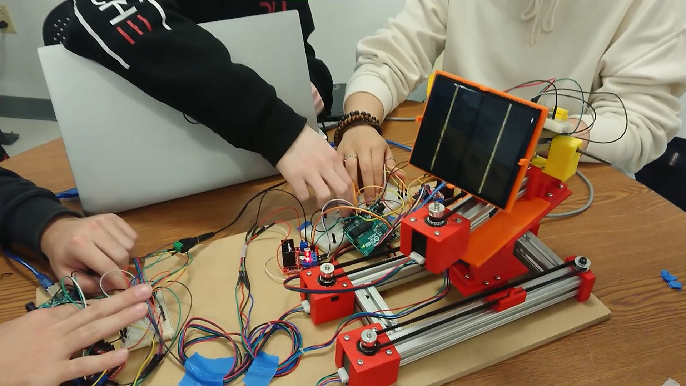

Controlled Solar Panel Arm
April-May, 2022 || 2 Month Project
Team: Charles (Product Design, Management, Engineering), Vlad (Engineering, Wiring),
Emily (CAD, Engineering), Peter (Engineering, Wiring)
Objectives
The goal of this project was to apply experience obtained in a previous cartesian-plotter exercise (using stepper motors and belts to create linear drive stages) and prior curricula of subsystems to construct a product. The product and its purpose were up to the team to decide, however it still needed to satisfy certain constraints.
Constraints
The assembly must be small and light enough to be easily carried in a backpack with an assembly time of no more than 10 minutes for a user. Its end-effector must move at a minimum of 2.5 inches in all directions. The materials will be limited to 3D printed parts, stepper motors, belts and pulleys, 8020 aluminum extrusion, and standard fasteners such as screws and pins. Items outside of this must be requested or provided by the team at the beginning of the project. This project will be designed, manufactured, and ready for demonstration day within five weeks of ideation.
Idea
Our team decided to design and construct a mechanism that holds a small solar panel to move around in a hemispherical space. Creating both linear and rotational motion, we intended to be able to monitor the power output of the solar panel at different orientations/locations in a given space so that it could find the best angles and placement for solar power. By using belts and motors, we could create a bottom “first stage” that composed a linear track for horizontal movement, carrying a platform that could turn (using a singular motor) on the vertical axis, holding up the top “final stage” where the solar panel’s zenith angle could be adjusted by a linear-to-rotational motion system. This would accomplish our goals with the given constraints and be a valuable product.
Stakeholder Context
Homeowners could use this light intensity product to determine the position of the sun and its effect on solar panels throughout the day. This would be a process done before putting solar panels on a roof or in a yard and would help homeowners determine where to put solar panels on their roof and how many would actually be effective. Besides homeowners, large-scale solar farms could also use this product to determine the best orientations and placements for photovoltaic deployment on their property. Companies in the solar industry could also use this product to assist customers in the same way. This builds trust between solar companies and customers while also saving customers money. If this data is logged by solar companies, it could also contribute to their database of the light intensity on buildings in local areas.
Initial Design and Revisions
The sketch below, drawn by myself, was our first attempt at designing the assembly sketch. The linear stages are not correctly oriented, and the platform idea was expanded poorly. There was also no clear idea of how the solar panel arm would rotate and does not quite fulfill the 2.5 DOF requirement.

Overall System and Solution
The system would contain a linear stage on the bottom, which would travel along an axis on the horizontal plane in two directions. This linear stage would navigate the middle stage platform, which would have a stepper motor on it. On the stepper motor, there would be another platform, which would have another linear stage that created rotational motion for the solar panel.
A typical linear stage includes a stepper motor, pulley, and belt. The idea for this project was to connect a carriage to the belt using 3D printed pieces that gripped the belt. The linear stage was constructed on standardized 8020 Aluminum bars. The carriage would slide through the 8020, while also being connected to the belt via simple friction (the carriage would hold the belt through its “crocodile teeth” shaped openings). The pulleys and motors would be connected on each end of the 8020 by creating certain 3D holders for them that were then screwed in.
The linear stage was composed of two belt/motor systems, so the two carriages would hold up each side of the first platform with screws. The central stepper motor was attached to the platform using a 3D printed holder, which is also screwed into the platform. A secondary platform was then attached to the central motor via its own cylindrical extrusion around the central motor’s axle. This platform was then connected to the linear stage at the top via screws.
The top linear stage was created similarly to the bottom linear stage, using a motor and a belt that was gripped by a 3D printed carriage traveling along a short 8020 extrusion. This carriage, though, was refined to push another carriage along another 8020 extrusion. That second extrusion was connected to a hinge at the base of the first extrusion and sat above it at a raised angle. With the two carriages connected at their own passive hinge, the movement of one carriage slid the other carriage along its 8020 track, forcing the angle between the two extensions to change. Moving the linear stage’s belt therefore changed the angle of the secondary extrusion (being called the “arm”), which changed the zenith angle of the solar panel that was attached at its end.
For the sake of time, we decided to program buttons for the user to manually move the solar panel instead of automatically sending a signal and adjusting. We also changed from using the MKS board to Arduino Uno and Nano boards to control the system through Arduino code instead of G-Code. To inform the user of the solar panel voltage reading, we added an LCD display screen.
On top of the arm before the solar panel (held by a 3D printed holder), an Arduino Nano was used to connect an LCD to the solar panel in order to read the voltage across the panel. Since the display would change live with what the solar panel provided as an output, this accomplished the goal of knowing how much power was being collected by the solar panel at a given orientation and position.
A better visual representation of the setup is the initial CAD model, which was created for the product:

OnShape was used for designing the CAD model for this project, as it allows multiple people to collaborate simultaneously and saves the file online. While some linear motors and platforms are not presented in the above model, the general system of construction is shown. Below are conceptual schematics of the wiring system that was used to run the system.

Final Product and Demonstration
After many long nights over the course of several weeks, through many iterations, testing, and failed attempts, the final product was built. Proudly presenting below: the user-controlled solar panel arm.
Future Improvements and Lessons Learned
Initially, one of the main ideas for this project was to have the system run on its own, adjusting its position on all three stages automatically in order to find the orientation in that space that read the highest solar power. This goal was scrapped due to time and feasibility constraints, and replaced with the final method of using an LCD to show voltages. If this project were continued into the future, our team would have wanted to revise the system with our initial idea, connecting the solar panel output to the motors in some way so that the mechanism would move without user input.
Additionally, the product itself has the potential for being expanded to a much larger scale, being used to more accurately support use cases for residential and industrial solar panel arrays. By building the system at a larger size, the range of specificity of the voltage readings could be improved and the range of displacement could be tuned to a higher degree.
With the current setup, two separate power supplies are required to run the system, and four separate Arduino boards are needed to operate the motors. We could further improve this by combining the wiring through soldering or breadboards so that only one microprocessor is needed. We could also improve the quality of the 3D-printed parts by using more precise printing techniques, such as stereolithography (SLA) instead of PLA printers.
Overall, this project allowed our team to put into practice a variety of principles, including system design, mechanisms, motor sizing/selection, motor communications/controls, additive manufacturing, and electrical system design. We had to brainstorm and collaborate in order to develop ideas into a feasible plan of action for this project given time, material, and feasibility constraints.